Лусия Каминос в GTA 6
Главная героиня · Обновлено:
Лусия Каминос — одна из двух главных героев GTA 6 и первая полноценная главная героиня в современных частях серии. Её история начинается в тюрьме штата Леонида.
- Одна из двух главных героев GTA 6: за неё можно играть, как и за Джейсона.
- Отец учил её драться, «как только она начала ходить».
- Попала в тюрьму Leonida Penitentiary, когда дралась за свою семью; вышла, по словам Rockstar, благодаря «чистому везению».
- Хочет той хорошей жизни, о которой её мать мечтает со времён Либерти-Сити.
- Решила действовать сама — «только умные ходы».
- Жизнь с Джейсоном может стать для неё выходом.
Кто это: официальное описание
По официальному описанию Rockstar, отец научил Лусию драться, как только она начала ходить, — и с тех пор жизнь «бьёт её наотмашь». Когда она вступилась за свою семью, это закончилось тюрьмой — Leonida Penitentiary. Выйти помогло, как пишет Rockstar, «чистое везение».
Урок Лусия усвоила: «отныне только умные ходы». Больше всего она хочет той хорошей жизни, о которой её мама мечтала ещё со времён Либерти-Сити. Но вместо полусырых фантазий Лусия готова взять всё в свои руки. Подпись к официальному кадру: «Только что из тюрьмы и готова переломить шансы в свою пользу — Лусия будет идти к цели, чего бы это ни стоило».
Её напарник — Джейсон Дюваль. Rockstar формулирует коротко: «Жизнь с Джейсоном может стать для неё выходом».
Цитаты
«Важно только одно: кого ты знаешь и что у тебя есть.»
Лусия · официальная страница персонажа, Rockstar Games
Лусия Каминос в трейлерах
Кадры, где Лусия Каминос точно в кадре, — с таймкодом, чтобы найти момент в видео.
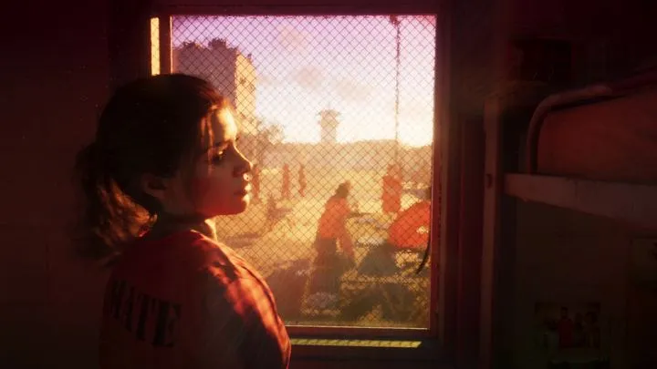
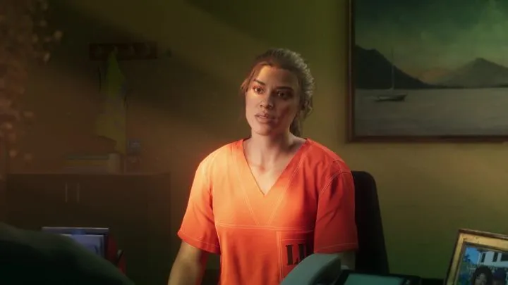
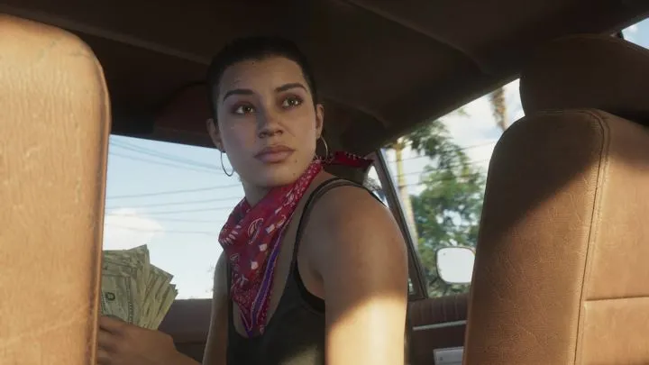
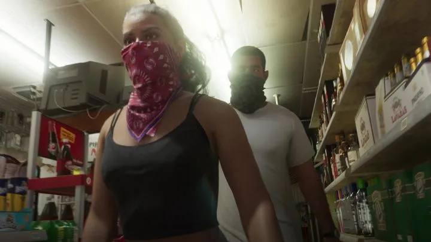
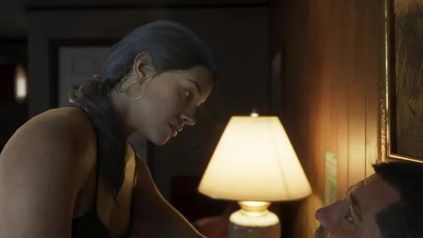
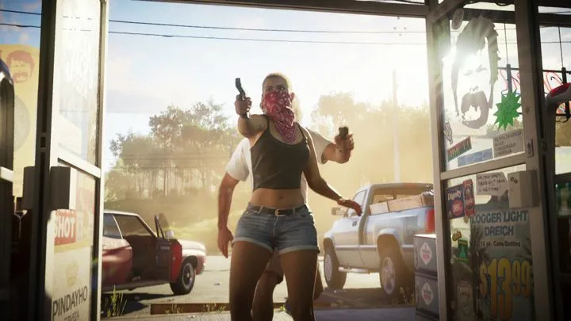
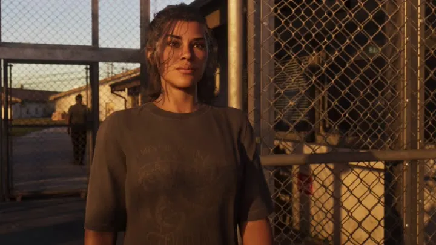
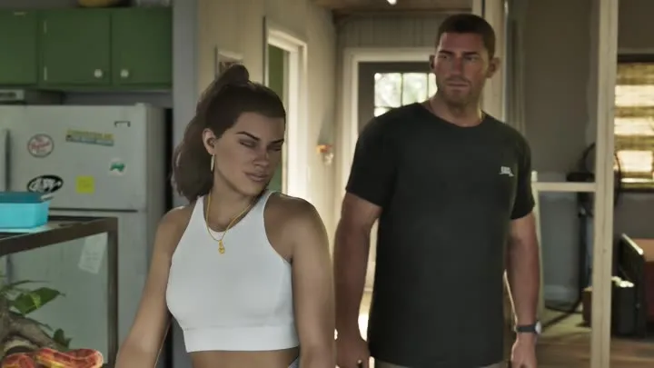
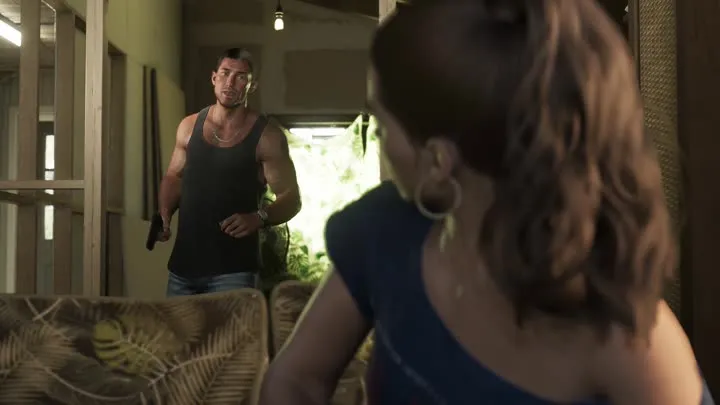
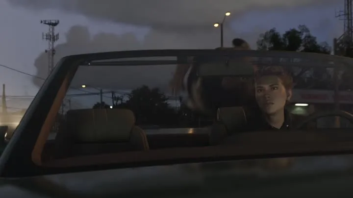
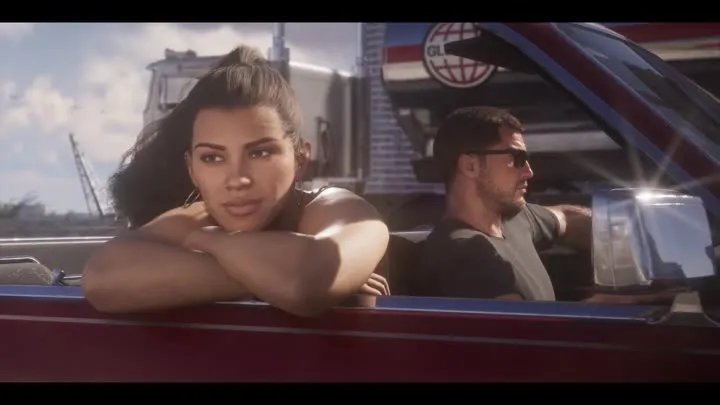
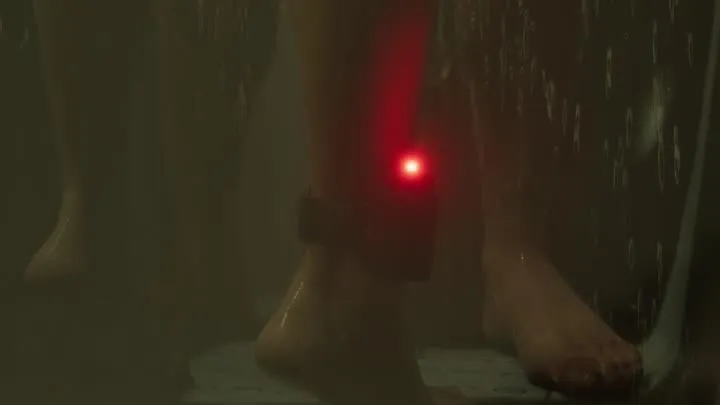
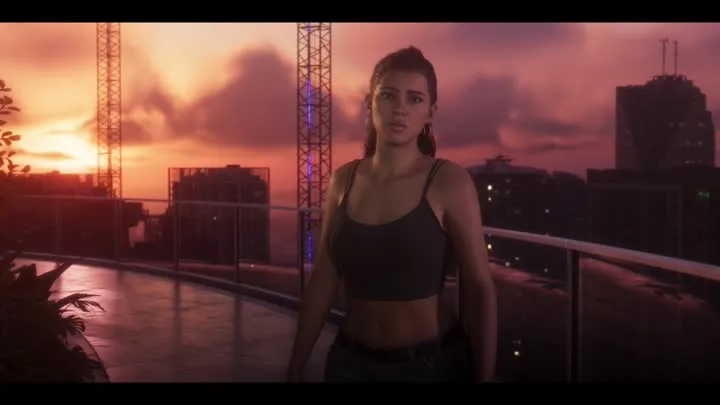
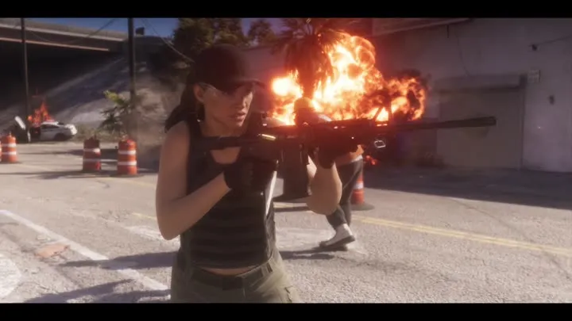
Официальные кадры
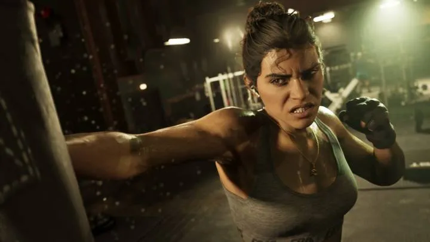
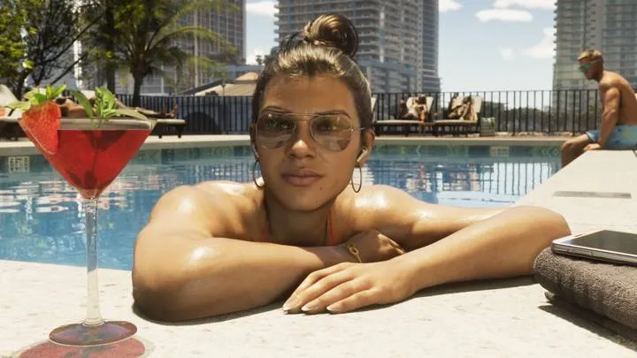
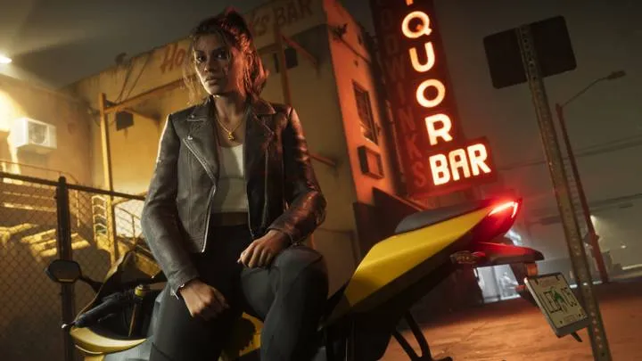
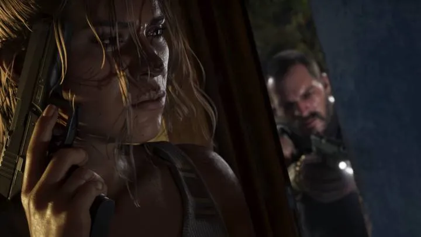
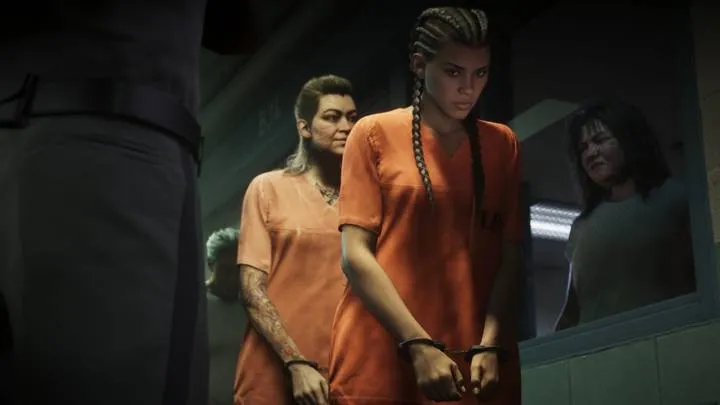
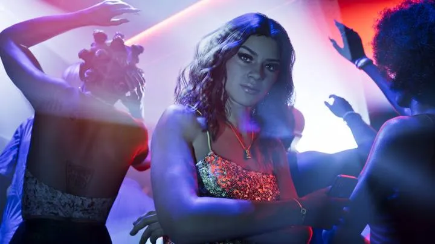
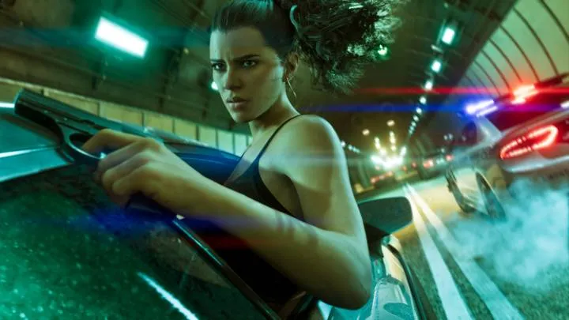
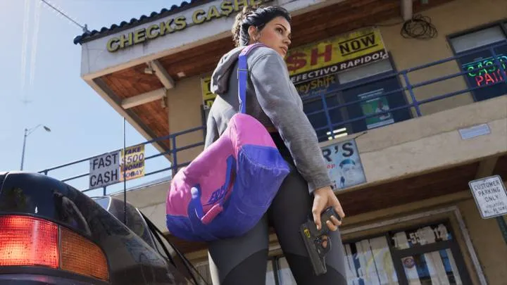
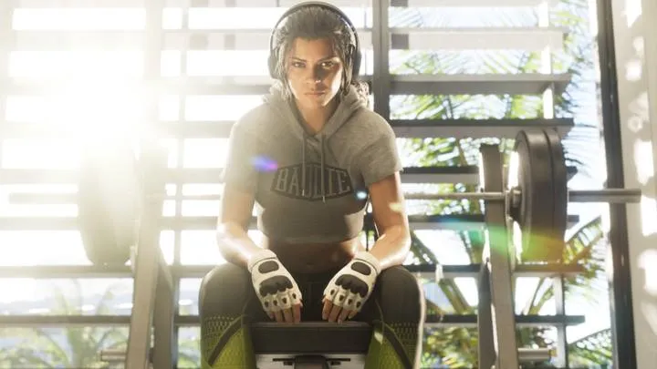
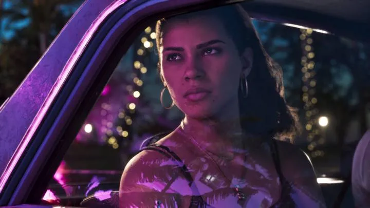
Связи с другими персонажами
- Джейсон Дюваль — партнёр и напарник
Что пока неизвестно
- За что именно Лусия попала в тюрьму, кроме того, что «дралась за семью», Rockstar не уточняла.
- Электронный браслет из трейлера 3 намекает на условия освобождения, но официально это не объяснено.
- Подробности её жизни в Либерти-Сити пока неизвестны.
После выхода игры 19 ноября 2026 года дополним страницу сюжетом и миссиями — без спойлеров в начале.
Лусия Каминос и реальность

 vs
vs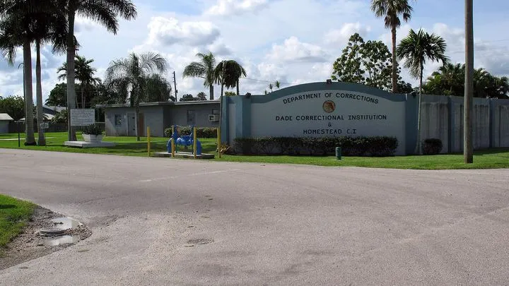
vsЧастые вопросы
Можно ли играть за Лусию?
Да. Лусия — одна из двух главных героев GTA 6 наравне с Джейсоном.
Почему Лусия была в тюрьме?
По описанию Rockstar, она попала в Leonida Penitentiary, когда дралась за свою семью. Подробности не раскрыты.
Откуда Лусия родом?
Rockstar упоминает, что её мать мечтает о хорошей жизни «со времён Либерти-Сити» — значит, семья жила там.
Лусия — первая главная героиня GTA?
Она первая полноценная главная героиня в современных частях серии.
Источник: Rockstar Games — официальная страница персонажа на rockstargames.com/VI (перевод Blip Guides), трейлеры 1–3. Изображения: Rockstar Games.
Каждый день — одно сравнение: кадр игры рядом с реальным фото. Подписывайтесь:
YouTubeInstagramTikTok